<!--Highlights-->
	<div class="gray" id="highlight">
		<div class="container">
			<h1>Resume Highlights</h1>
			<hr>
			<div class="row">
				<div class="col-sm-3 item">
					
					<h3>Microsoft Intern</h3>
					<p>This summer, I worked at Microsoft as a technical Program Manager, where I worked as the project leader on a team of 5 to 
						develop a full stack web application aimed at increasing productivity. In addition to being the face of the team, I worked
						as a developer for the team.
					</p> 
				</div>
				<div class="col-sm-3 item">
					
					<h3>Computer Science Teaching Assistant</h3>
					<p> I've worked for three semesters as a Teaching Assistant for the Duke Department of Computer Science, first for Fundamentals of Computer Science, an 
						introductory course taught in python, and then for Data Structures and Algorithms,taught in Java. </p> 
				</div>
				<div class="col-sm-3 item">
					
					<h3>Founder and President of Catalyst</h3>
					<p>I am a founding member and past president of Catalyst, a preprofessional tech organization at Duke. In these roles, I led meetings, planned and organized
						events, and helped with the chartering process for the organization.
					</p>
				</div>
				<div class="col-sm-3 item">
					
					<h3>Volunteer Tech Teacher</h3>
					<p>During the summer of 2016, I was a volunteer at the Spark Community Center in Spokane, Washington, where I 
						I taught kids coding and robotics workshops using technology
						such as Scratch, Little Bits, Ozobots, and Code.org.  
					</p> 
				</div>
			</div>
			<a href="files/Larissa_Cox_Resume.pdf" download="LarissaCoxResume">
				<div class="button">
					<input type="get" action="files/Larissa_Cox_Resume.pdf" class="btn btn-large"  value="Resume">
				</div>
			</a>
		</div>
	</div>